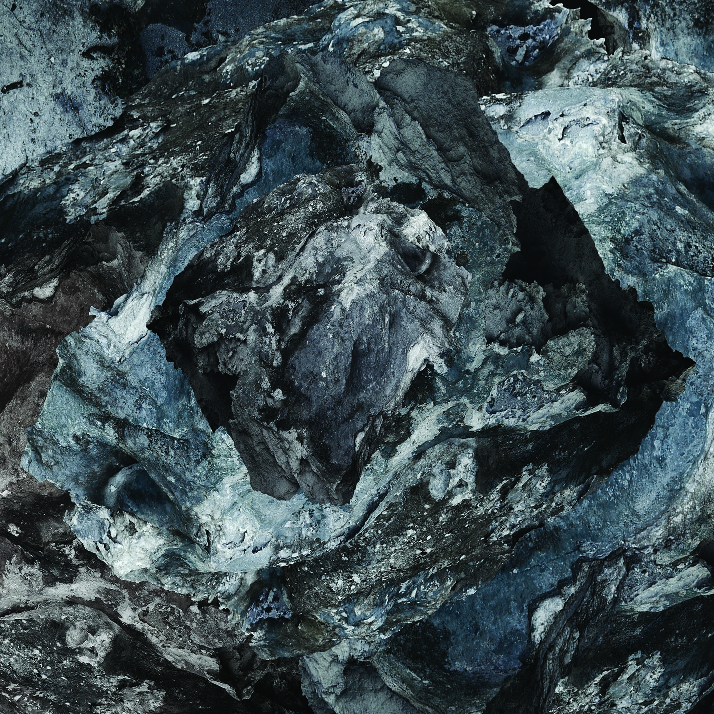

Archive / Exhibition
Field
- When
- 2014
- Venue
- Strange Neighbour Gallery
- Format
- Landscape photography
- Essay
- Jo Scicluna, May 2014
Project overview
Field constructs a view from which to consider nature, the material universe and its inherent phenomena.

Artist statement
Microcosm, in contrast to vast unending place.
At its core, the work is landscape photography, however a number of filters are at play. Microcosm, in contrast to vast unending place (where action, time and space are evident), the interconnectedness of matter and the sublime, all inform this inquiry. Stillness and motion, the residue of chaos and unending time are deliberated through a variety of material approaches and visual cues.